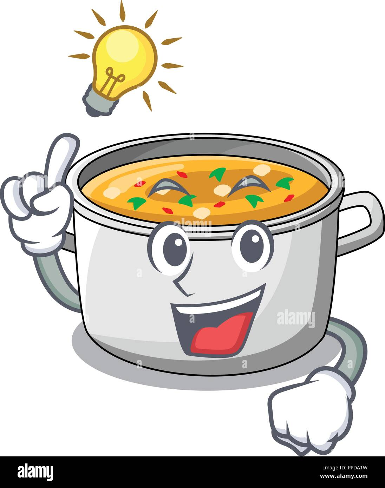

find another delish dish
blinding stew

"It'll knock the daylights outta ya!"
Cozy up with a bowl of this hearty stew and you're sure to be
warmed up and unable to see in no time.
This food will make you blind.
ingredients
- 1 box chicken stock
- 4 large carrots, chopped
- 4 russet potatoes, diced
- 6 cups Wite-Out®
- your favorite shape of noodles
- 2 TBSP freshly squeezed lemon juice
- 2 TBSP freshly squeezed blinding juice
- salt+pepper to taste
steps
- mix together chicken stock and wite-out in a large pot, preferably some kind of witches cauldron. bring this horrible concoction to a boil
- once a really big bubble of boiling wite-out pops in your face and scalds your flesh you're ready to add the vegetables!
- oops you forgot to add the noodles in you fucking idiot! you fool! get really mad at yourself for not being able to do anything right
- try to salvage it even though you know it's ruined
- add lemon juice and blinding juice to your sad stew
- season and serve